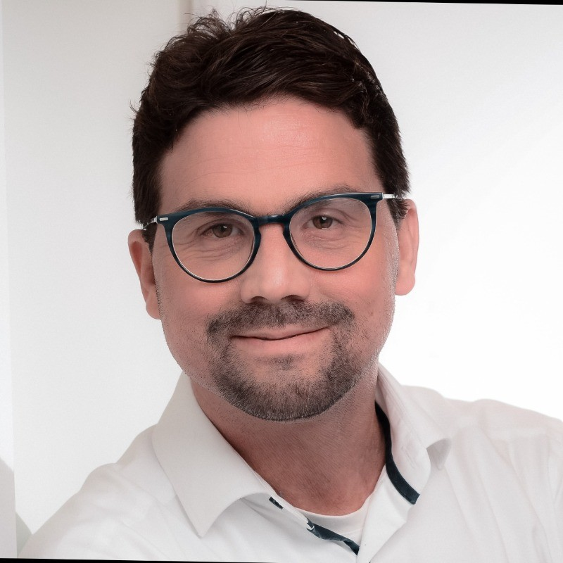

Client recommendation
She doesn’t just recommend what should be done — she knows how to make it work in practice.

Dennis BresselHead of Customer Success & Support, Rail-FlowBuilding Customer Success at Rail-Flow
From fragmented Excel sheets and individual knowledge to a structured, transparent and AI-ready Customer Success operation.
Read the full recommendationHide the full recommendation
FULL CLIENT RECOMMENDATION
What stood out to me was her ability to think strategically and systematically without losing sight of the CSM’s day-to-day reality. She explains complex topics clearly, works pragmatically, and stays calm and focused even in turbulent situations.
She doesn’t just recommend what should be done — she knows how to make it work in practice.